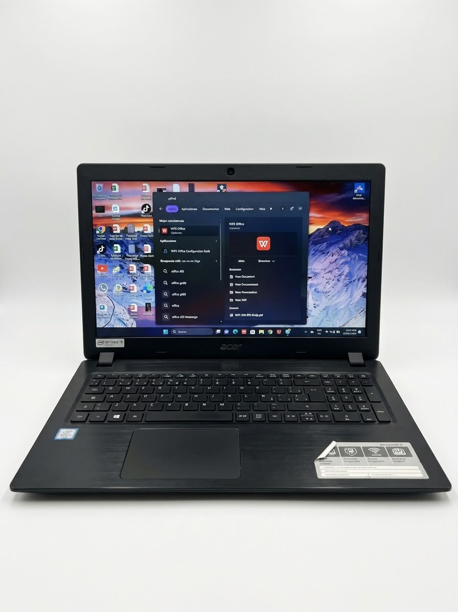

🔍
Diagnóstico
Identificación de fallas y problemas que afectan el funcionamiento de los equipos, tanto a nivel de hardware como de software.
Cargando proyecto...
0%
PROYECTO PRODUCTIVO SENA
Proyecto orientado al diagnóstico, mantenimiento preventivo y correctivo de equipos de cómputo, identificando fallas de hardware y software para mejorar su funcionamiento, rendimiento y vida útil.
Conocer el proyectoDiagnóstico · Mantenimiento · Optimización
Identificación de fallas y problemas que afectan el funcionamiento de los equipos, tanto a nivel de hardware como de software.
Aplicación de procedimientos preventivos y correctivos para conservar los equipos en óptimas condiciones y prolongar su vida útil.
Acciones orientadas a mejorar el rendimiento, la estabilidad y el funcionamiento general de los equipos de cómputo.
En esta sección encontrarás toda la información relacionada con el planteamiento del proyecto, desde la identificación del problema hasta los objetivos y el alcance que se pretende lograr.
El proyecto Mantenimiento de Equipos de Cómputo tiene como propósito realizar procesos de diagnóstico, mantenimiento preventivo y correctivo en diferentes dispositivos tecnológicos. Durante el desarrollo del proyecto se revisarán equipos de cómputo y sus componentes, identificando fallas tanto a nivel de hardware como de software para determinar las causas y establecer soluciones adecuadas.
El proceso incluye la inspección, verificación, mantenimiento y pruebas de funcionamiento de los equipos, aplicando los conocimientos técnicos adquiridos durante la formación como aprendices del SENA.
Actualmente, diferentes establecimientos y negocios cuentan con equipos de cómputo que son utilizados diariamente, pero a los cuales no se les realiza un mantenimiento preventivo o correctivo de manera periódica.
El proyecto estará dirigido principalmente a pequeños y medianos negocios que utilizan equipos de cómputo para sus actividades diarias.
El problema se presenta principalmente en pequeños y medianos negocios, establecimientos comerciales y oficinas.
Entre las principales causas se encuentran la falta de mantenimiento periódico, acumulación de polvo y suciedad, y desactualización del software.
La falta de mantenimiento puede ocasionar disminución del rendimiento, sobrecalentamiento, y fallas de hardware.
Realizar el diagnóstico y mantenimiento preventivo y correctivo de diferentes equipos de cómputo, identificando las fallas presentes y aplicando las soluciones técnicas necesarias.
Se desarrollarán procesos de diagnóstico, mantenimiento preventivo y correctivo de equipos de cómputo, realizando revisión física y funcional.
El proyecto está dirigido a pequeños y medianos negocios, establecimientos comerciales, oficinas y personas que cuenten con equipos de cómputo.
La implementación del proyecto se realizará en una vivienda ubicada en la Calle 22J # 120A-03, barrio Zelfita (localidad de Fontibón), donde se llevarán a cabo los procesos de revisión, diagnóstico y mantenimiento de los equipos seleccionados.
Calle 22J # 120A-03
Barrio Zelfita, Fontibón
Bogotá D.C., Colombia

Lograr que los equipos intervenidos presenten mejor funcionamiento, rendimiento y estabilidad, mediante la identificación y solución de las fallas encontradas.
El mantenimiento de equipos de cómputo comprende un conjunto de procedimientos destinados a conservar, recuperar y mejorar el funcionamiento de los sistemas informáticos.
El mantenimiento preventivo busca reducir la posibilidad de fallas mediante acciones periódicas como limpieza, inspección y revisión de componentes. Por otra parte, el mantenimiento correctivo se realiza cuando el equipo presenta una falla que requiere ser identificada y solucionada.
El diagnóstico permite identificar el estado actual de los equipos, detectar problemas de hardware y software, y establecer las soluciones más adecuadas para cada caso.
Aquí se organiza cómo se desarrollará el proyecto: quién hace cada actividad y cuándo, el formato de servicio técnico del equipo que se va a atender y los recursos necesarios para realizar los mantenimientos.
Las actividades de las fases de Análisis y Planeación se repartieron en partes iguales entre los tres integrantes del equipo (cuatro tareas por persona) y se desarrollaron entre el 1 de julio y el 21 de octubre de 2026.
La fase de Evaluación estará disponible próximamente.
Descargar cronograma (Excel)Hoja de vida y servicio técnico del primer equipo recibido. En ella se registran los datos del cliente, las características del hardware y software, y la novedad reportada.

El equipo no tiene Microsoft Office instalado, por lo que se realizará su instalación. Diagnóstico inicial: el equipo funciona con normalidad, cuenta con 43 GB libres en el disco C: y el antivirus está activo y sin amenazas detectadas.
Materiales, herramientas e insumos necesarios para realizar mantenimiento preventivo y correctivo con un equipo de tres técnicos.
Fuente de financiamiento: Recursos propios (aprendices)
| Descripción técnica | Cant. | Valor unitario | Valor parcial |
|---|---|---|---|
| Alcohol isopropílico al 99%, frasco de 500 ml, para limpieza de tarjetas, contactos y componentes | 2 | $ 28.000 | $ 56.000 |
| Limpiador de contactos eléctricos y electrónicos en spray, 220 ml | 2 | $ 22.000 | $ 44.000 |
| Pasta térmica de alta conductividad, jeringa de 4 g, para CPU y GPU | 3 | $ 18.000 | $ 54.000 |
| Aire comprimido en lata de 400 ml, para retirar polvo de ventiladores, disipadores y ranuras | 3 | $ 25.000 | $ 75.000 |
| Paño de microfibra antiestático, paquete x6 | 2 | $ 15.000 | $ 30.000 |
| Bastoncillos (hisopos) de algodón, caja x100 | 2 | $ 4.000 | $ 8.000 |
| Bridas plásticas de 20 cm, paquete x100, para organizar cableado interno | 1 | $ 8.000 | $ 8.000 |
| Guantes de nitrilo desechables, caja x100 | 1 | $ 32.000 | $ 32.000 |
| Bolsas antiestáticas para almacenar tarjetas y componentes, paquete x10 | 2 | $ 12.000 | $ 24.000 |
| Limpiador de pantallas en spray, 120 ml, con paño | 2 | $ 14.000 | $ 28.000 |
| Etiquetas adhesivas para rotulado de equipos y cables, paquete | 1 | $ 10.000 | $ 10.000 |
| Total materiales | $ 369.000 | ||
| Descripción técnica | Cant. | Valor unitario | Valor parcial |
|---|---|---|---|
| Kit de destornilladores de precisión 25 en 1 (Phillips, Torx, hexagonal, pentalobe), para equipos de escritorio y portátiles | 3 | $ 35.000 | $ 105.000 |
| Pulsera antiestática con cable a tierra y clip caimán | 3 | $ 9.000 | $ 27.000 |
| Multímetro digital (voltaje AC/DC, resistencia y continuidad) | 1 | $ 45.000 | $ 45.000 |
| Probador de fuente de poder ATX de 20/24 pines | 1 | $ 35.000 | $ 35.000 |
| Juego de pinzas antiestáticas de acero inoxidable (x3) | 1 | $ 18.000 | $ 18.000 |
| Kit de palancas y espátulas plásticas para apertura de portátiles | 2 | $ 12.000 | $ 24.000 |
| Brocha antiestática de cerdas suaves, para limpieza de tarjetas y disipadores | 3 | $ 7.000 | $ 21.000 |
| Probador de cable de red RJ45/RJ11 | 1 | $ 30.000 | $ 30.000 |
| Memoria USB de 32 GB, para booteo e instalación de sistemas operativos | 3 | $ 25.000 | $ 75.000 |
| Tapete antiestático de trabajo (60 x 40 cm) con cable a tierra | 1 | $ 55.000 | $ 55.000 |
| Total equipos, dispositivos y herramientas | $ 435.000 | ||
Aquí se documenta el trabajo realizado sobre el equipo recibido: las acciones del mantenimiento y las recomendaciones para el cliente, tal como quedaron registradas en el formato de servicio técnico.
Hoja “Registro de mantenimiento” del formato de servicio técnico del portátil Acer Aspire A315-51 de David Duarte Gomez.
El equipo no tiene Microsoft Office; se instalará.
Equipo en buen estado general, con Windows 11 Pro, 43 GB libres en el disco C: y Windows Defender activo y sin amenazas detectadas.
Esta fase aún no se ha desarrollado. Cuando esté lista, aparecerá en esta página.
Aquí se publicará la carta de satisfacción del servicio y las recomendaciones para el cliente.